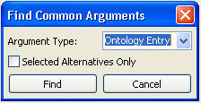
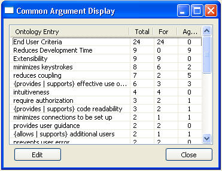

Find Common Arguments
Another useful query is to find out what are the most common arguments are. This
can be
done for each of the three types: argument, claim, and ontology entry. Selecting
which
type is the first step, as shown in the following figure. The user can also indicate if
they are only interested in common arguments for selected alternatives.

After selecting the type, the arguments are then displayed in a
table giving the total
references, the number of times it was used to argue in support for an
alternative and the number of times it opposed an alternative. The following
figure shows
the Common Argument
Display showing ontology entries.
